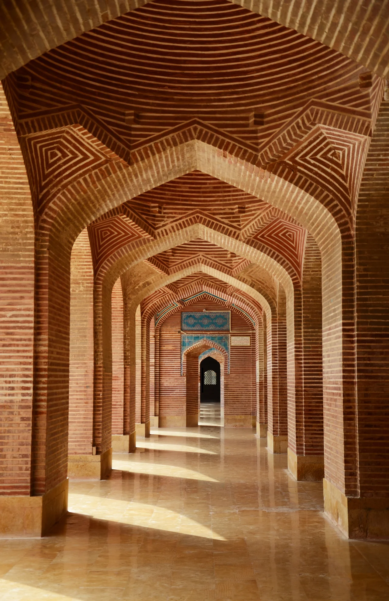
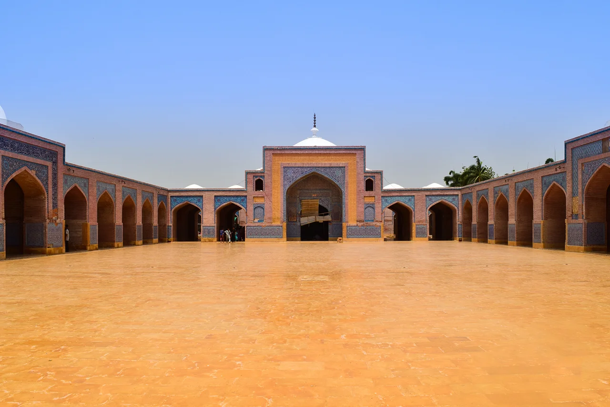

Archaeology & Ancient Civilisations
Material traces of early settlements, cities and the civilisations that shaped the region.
0 storiesExplorePlaces · objects · cultural memory
Explore researched stories through collections that connect place, material culture and living memory.
Explore the collections
Material traces of early settlements, cities and the civilisations that shaped the region.
0 storiesExplore
Buildings, streets and designed places understood through detail, use and change.
0 storiesExplore
Places of belief, memory and devotion across Pakistan’s many religious traditions.
0 storiesExploreSkills, ceremonies and knowledge carried forward through practice and community.
0 storiesExploreObjects understood through their making, use, movement and cultural meaning.
0 storiesExplore
Landscapes and historic places formed through settlement, movement, memory and use.
0 storiesExploreComplete collection